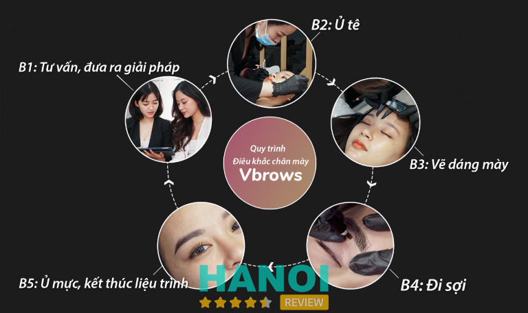
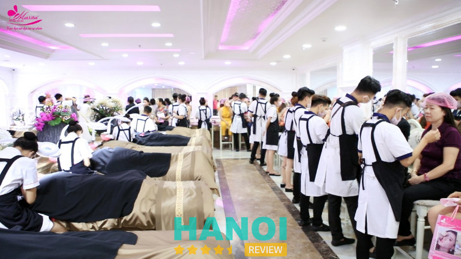
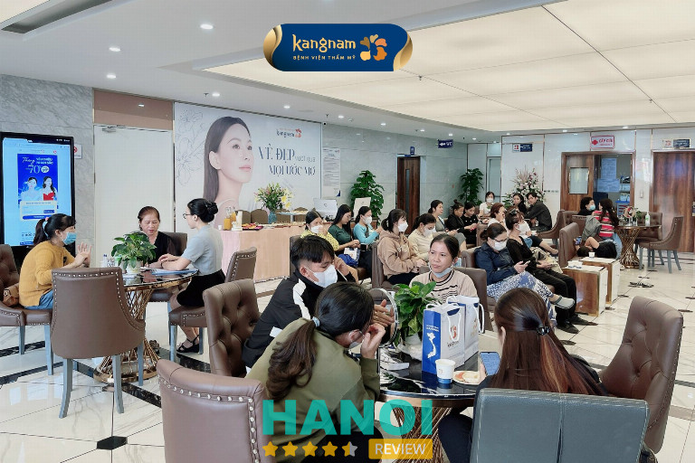
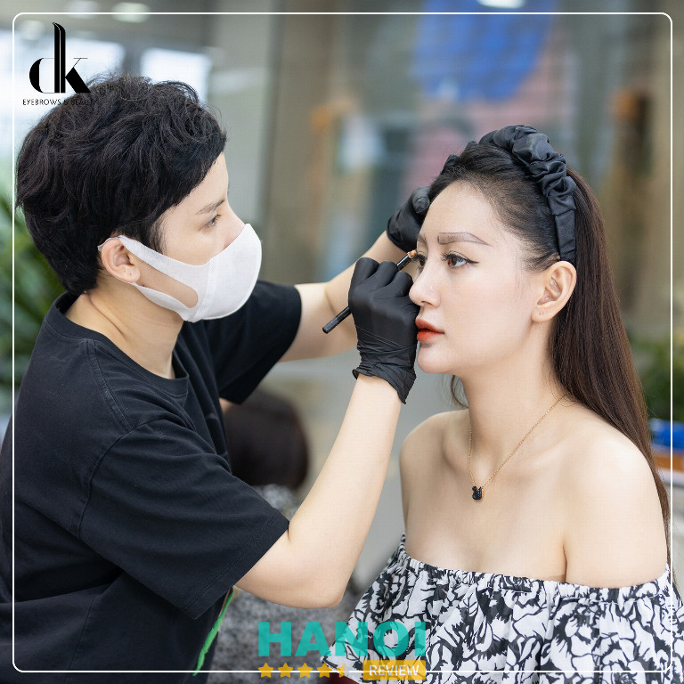
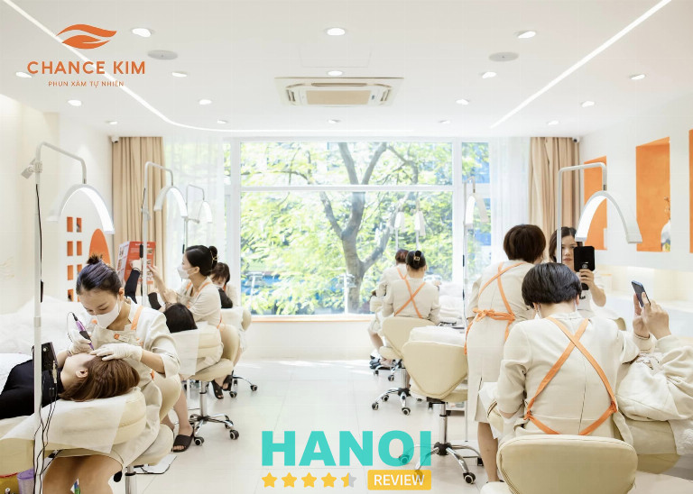
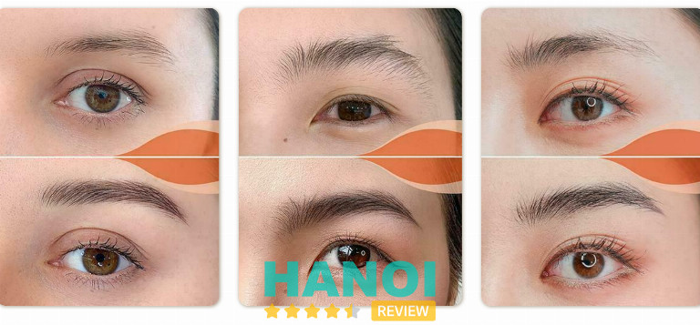
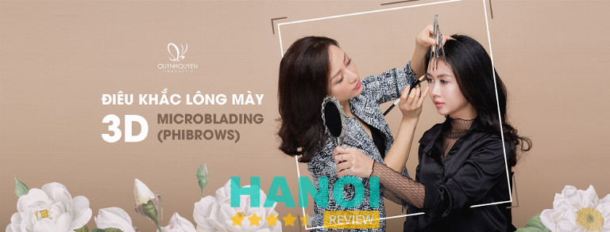
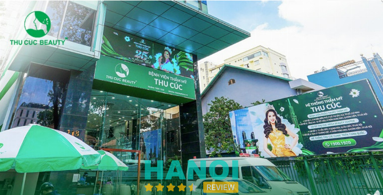

10 Spa điêu khắc chân mày tại Hà Nội uy tín, đẹp nhất
Spa điêu khắc chân mày tại Hà Nội là mối quan tâm của nhiều chị em phụ nữ. Để có cặp chân mày đẹp, hài hòa thì phái đẹp luôn tìm kiếm các thẩm mỹ viện uy tín. Các dịch vụ và cơ sở vật chất của các địa điểm này cũng là những điểm cộng để đánh giá chất lượng spa.
Top 10 Spa điêu khắc chân mày ở Hà Nội tốt nhất
Mỗi khuôn mặt sẽ phù hợp với những kiểu dáng chân mày khác nhau, để có thể giúp khuôn mặt hài hòa hơn nhiều người lựa chọn các thẩm mỹ viện để được các kỹ thuật viên tay nghề cao tư vấn lựa chọn dáng chân mày. Sau đây là 10 spa điêu khắc chân mày tại Hà Nội đẹp nhất, mực xịn, giá rẻ.
Lacasa Beauty Spa
Điêu khắc chân mày tại Lacasa Beauty Spa được phân biệt khác với các phương pháp điêu khắc chân mày khác ở cách đi sợi và sắp xếp sợi lông mày. Do sử dụng cách đi sợi riêng biệt nên lông mày sau điêu khắc không chỉ tạo hiệu ứng 3D, mà còn mảnh và mềm hơn so với các phương pháp khác.
Phương pháp điêu khắc chân mày Vbrows là phương pháp điêu khắc độc quyền, được sáng tạo bởi chuyên gia Vân Nguyễn. Đây là chuyên gia hàng đầu về phun xăm thẩm mỹ tại Việt Nam. Khác biệt ở điêu khắc chân mày Vbrows là cách thức đi sợi lông mày chuyên biệt.

Giúp tạo ra kết quả tự nhiên và mềm mại. Sau một thời gian, kết quả điêu khắc chân mày Vbrows sẽ vẫn giữ được 80-90% sự tự nhiên so với lúc mới làm. Đây có thể nói là một ưu điểm vượt trội khi đa phần các phương pháp điêu khắc chân mày khác đều thường chỉ đẹp ngay sau khi làm và có thể mất tự nhiên sau một tuần tới một tháng.
Ưu điểm của phương pháp điêu khắc chân mày Vbrows là thời gian thực hiện nhanh chóng chỉ một tiếng đến một tiếng rưỡi. Quá trình thực hiện nhẹ nhàng, không có cảm giác khi thực hiện. Kết quả tự nhiên mềm mại. Lông mày không bị đóng khung và cứng như các phương pháp khác.
Dòng mực hữu cơ Amiea sử dụng tại Lacasa Beauty Spa được phát triển đảm bảo quy định an toàn của EU, các chất màu hữu cơ không chứa bất kỳ kim loại nào. Đây là một thương hiệu đứng đầu trên thế giới về các sản phẩm mực phun xăm và thiết bị PMU của MT.DERM được thành lập năm 1998 tại Đức.
Thông tin liên hệ:
- Địa chỉ: 6 Ao Sen, P. Mộ Lao, Q. Hà Đông, Hà Nội
- Điện thoại: 0945 607 799
- Email: labeautycs2@gmail.com
- Website: lacasabeauty.vn
- Fanpage: FB.com/lacasabeautyVN
- Giờ mở cửa: 09h – 18h
Rio Beauty Spa
Sứ mệnh của Rio là giữ mãi nét thanh xuân của bạn vì một dịch vụ làm đẹp chất lượng tốt vẫn chưa đủ. Thẩm mỹ Rio Beauty Spa mong muốn mỗi Khách hàng đến điều trị đều hài lòng và sẵn sàng chia sẻ những câu chuyện tốt về thương hiệu. Rio quan niệm rằng chỉ có những điều tốt đẹp mới tạo nên một cuộc sống tốt đẹp.
Ngũ quan, cơ địa mỗi người mỗi khác. Vì thế khi đến điêu khắc chân mày tại Rio, các chị em sẽ được thực hiện tuần tự các bước từ tư vấn, thăm khám cho đến khi hài lòng sở hữu cặp lông mày ra về. Đầu tiên bạn được thăm khám và kiểm tra trạng thái chân mày hiện giờ và đưa ra kiểu dáng chân mày phù hợp.
Tiếp theo tư vấn về màu mực xăm cho thích hợp với tuổi, màu da. Sau đó tiến hành vẽ dáng chân mày và chỉnh sửa theo dáng yêu thích của các bạn. Vệ sinh chân mày, sát khuẩn vì vệ sinh vùng chân mày trước khi xăm sẽ đảm bảo an toàn cho giai đoạn thực hành.
Bôi thuốc gây tê chuẩn Hàn Quốc giúp khách không đau, không sưng trong thời kỳ làm. Cuối cùng tiến hành điêu khắc chân mày. Đến với Rio, các bạn không chỉ được chính tay các nghệ sĩ tạo cho cặp chân mày đầy ấn tượng mà còn được hưởng nhưng dịch vụ tốt nhất, thoải mái nhất.
Được thực hiện bởi chuyên viên nam giới có tay nghề cao, hơn 10 năm kinh nghiệm trong lĩnh vực phun xăm thẩm mỹ. Các chuyên viên tại Rio đều được đào tạo trực tiếp từ các chuyên gia đến từ Hàn Quốc. Ngoài ra, tại Thẩm mỹ Rio Beauty Spa còn nhận đào tạo tay nghề cho các chuyên viên tại các thẩm mỹ viện khác.
Vì vậy hoàn toàn đảm bảo được tay nghề của các chuyên viên tại Rio. Các chuyên viên điêu khắc sẽ tạo dáng lông mày theo ý khách hàng. Theo đó, từng sợi lông mày sẽ được tạo ra vô cùng tỉ mỉ đan xen vào những sợi lông mày thật trông vô cùng tự nhiên.
Máy móc đồ vật được nhập khẩu từ Mỹ, Hàn Quốc nhằm đem đến cho các bạn những trải nghiệm tuyệt vời cũng như kỹ thuật tốt nhất. Mẫu mực dùng để điêu khắc chất lượng cao, duy trì màu đến 7 năm. Các chuyên viên phải được đeo bao tay diệt trùng, khẩu trang y tế để tránh lây nhiễm bệnh hô hấp cho khách hàng và cả chính chuyên viên.
Các phương tiện liên quan như đồ chứa mực, kim, xuyên kim, bông gòn, đồ lót khay, thuốc tê, dao đều chỉ được sử dùng một lần duy nhất. Khu vực tiếp đón và phòng phục vụ đều rất sạch sẽ và vô cùng thoáng mát. Đội ngũ nhân viên chuyên nghiệp, nhiệt tình.
Thông tin liên hệ:
- Địa chỉ: 217 Thụy Khuê, P. Thụy Khê, Q. Tây Hồ, Hà Nội
- Điện thoại: 0963 246 533
- Email: thammyrio999@gmail.com
- Website: thammyrio.com
- Facebook: FB.com/thammyriobeauty
- Giờ mở cửa: 08h – 22h30
Tham khảo thêm: 10 Địa chỉ massage body trị liệu tại Hà Nội dịch vụ tốt nhất.
Thẩm mỹ viện Mailisa
Phun mày chạm hạt Sương Bay là công nghệ Mới Nhất và Độc Quyền tại Mailisa. Với phương châm trao bạn nét đẹp mà tự nhiên, khi mỗi quý khách hàng đến với Mailisa sẽ được đội ngũ nhân viên chuyên môn cao, tay nghề giỏi tư vấn chọn màu, thiết kế vẽ mẫu phù hợp với từng khuôn mặt.
Khi khách hàng thực sự hài lòng thì chuyên viên mới bắt đầu phun theo dáng mẫu vừa vẽ. Dụng cụ mới vô trùng riêng biệt cho từng khách hàng, kết hợp cùng màu mực Doctor Magic nhập khẩu chính hãng, giúp cho màu sắc được bền, đẹp, tự nhiên.

Tuyệt đối không bị trổ xanh trổ đỏ, tông màu chính xác, phối màu nào ra màu đó, an toàn cho sức khỏe, đảm bảo gu thẩm mỹ. Chỉ cần chạm nhẹ trên da khoảng 30 phút, kết hợp với kỹ thuật pha phối màu chuẩn tông tạo ra không gian sáu chiều làm cho cặp chân mày thời trang, sang trọng đẹp tự nhiên
Hoàn toàn không sưng, không đau, không chảy máu, không chích tê, không tổn thương da, không bong tróc, canh màu nào là ra màu đó, làm xong đẹp ngay, không cần nghỉ dưỡng. Mailisa tuyệt đối không chích hay tiêm tê nên công nghệ này phù hợp với mọi khách hàng, mọi lứa tuổi.
Ưu điểm vượt trội là dành cho tất cả các chị em phụ nữ yêu thích làm chân mày theo phong cách thời trang, sang trọng, đẹp tự nhiên. Chuyên viên sẽ tỉa những sợi chân mày mọc lung tung để đưa vào form mẫu, tuyệt đối không cạo chân mày của khách hàng.
Sau đó vẽ thiết kế một cặp chân mày phù hợp với từng khuôn mặt hoặc theo sự yêu cầu của khách hàng. Thoa tê chuyên dụng vào vùng da cần phun để khách không đau. Kỹ thuật pha phối màu chuẩn tông phù hợp với màu da, màu lông, màu tóc phù hợp với khách hàng hoặc phối màu theo yêu cầu của khác.
Để khách ngắm nhìn một lần nữa và kết thúc quá trình thực hiện. Sau khi phun xong, chuyên viên sẽ thoa tinh chất dưỡng mày để khóa màu, giúp tái tạo phục hồi da nhanh chóng, làm cho màu vừa bền và đẹp. Hoàn thành quy trình, hướng dẫn khách cách chăm sóc chân mày sau khi phun.
Dịch vụ điêu khác chân mày tại thẩm mỹ viện Mailisa hiện tại đang có giá là 900k. Các chị em hãy đến các chi nhánh Mailisa gần nhất để làm đẹp thả ga không lo về giá, an toàn cho sức khỏe, đảm bảo gu thẩm mỹ. Dịch vụ cao cấp giá bình dân và có cung cấp phiếu bảo hành cho từng khách hàng.
Thông tin liên hệ:
- Địa chỉ: 06 Nguyễn Khánh Toàn, P. Quan Hoa, Q. Cầu Giấy, Hà Nội
- Điện thoại: 0932 699 299
- Email: tuvan@mailisa.com
- Website: mailisa.com
- Fanpage: FB.com/mailisagroup
- Giờ mở cửa: 07h – 18h
Tham khảo thêm: 10 Địa chỉ làm hồng nhũ hoa tại Hà Nội uy tín, đẹp tự nhiên.
Bệnh viện thẩm mỹ Kangnam
Bệnh viện thẩm mỹ Kangnam sử dụng phun xăm Plascell. Đây là phương pháp điêu khắc chân mày hàng đầu tại Hàn Quốc. Ngay khi vừa ra mắt đã gây ấn tượng bởi cơ chế lành nhanh, tốc độ phục hồi và màu sắc lưu giữ đến 90% sau bong.
Phun xăm Plascell là công nghệ phun xăm với cơ chế giảm sưng, lành nhanh số một thông qua việc kết hợp chiếu tia Plasma lạnh. Công nghệ sử dụng kim Nano siêu nhỏ giúp hạn chế tổn thương và hệ máy cao cấp có gắn trục lò xo giúp kiểm soát kim xăm vào đúng lớp biểu bì thay vì phụ thuộc vào lực tay như các máy thông thường.

Do đó mực đi vào đúng lớp biểu bì, chuẩn màu và hạn chế tổn thương, xơ cứng vùng da sau xăm. Tia Plasma lạnh được chiếu trong quá trình thực hiện, có tác dụng giảm đau, diệt khuẩn giảm viêm, tăng khả năng tái tạo biểu bì, giúp lành nhanh, giảm thiểu đáng kể tình trạng dặm đi dặm lại của các loại phun xăm cũ.
Về loại mực, phun xăm Plascell tại Kangnam sử dụng loại mực cao cấp Biotouch được FDA Hoa Kỳ chứng nhận, mực có kích thước hạt mực siêu nhỏ nanomet giúp mực bám màu nhanh và giữ màu bền lâu, đặc biệt an toàn với sức khỏe.
Nếu như chị em khi phun xăm thường sợ đau, sợ nhiễm trùng, sợ môi khô thì với phun xăm Plascell, mọi nỗi lo đều tan biến. Plasma có tính năng diệt virus, vi khuẩn, tái tạo Collagen, nên vùng xăm lành nhanh gấp năm lần so với công nghệ thông thường.
Đồng thời giảm thiểu tối đa tình trạng chai sần vùng da do phun xăm nhiều lần. Phun mày Plascell giúp lông mày sắc nét, chuẩn màu, đúng khuôn, không lem màu. Với Phun xăm Plascell, màu sau bong lưu giữ đến từ 80 -100% nên chị em yên tâm màu sẽ đúng ý mình chọn.
Đặc biệt hạn chế phải dặm đi dặm lại nhiều lần mất thời gian. So với các công nghệ cũ thì thời gian phục hồi nhanh, không cần nghỉ dưỡng. Để có được cặp chân mày như ý muốn, khi đến Kangnam bạn sẽ được tiến hành thăm khám, kiểm tra tình trạng da của bạn để tư vấn màu sắc, giải pháp thích hợp nhất.
Kangnam đi đầu trong việc cập nhật công nghệ thẩm mỹ tân tiến trên thế giới, đem đến vẻ đẹp an toàn, hoàn mỹ cho khách hàng. Tuy nhiên, mức chi phí phun xăm hợp lý, tối ưu cho khách hàng với đủ các tiêu chuẩn an toàn về y tế do Bộ Y Tế cấp phép, các chuyên viên, kỹ thuật viên đều được trang bị đầy đủ kiến thức về phun xăm an toàn, đặc biệt khắt khe trong việc khử khuẩn dụng cụ, thiết bị.
Thông tin liên hệ:
- Địa chỉ: 190 Trường Chinh, P. Khương Thượng, Q. Đống Đa, Hà Nội
- Điện thoại: 0968 999 777
- Email: tuvan@kangnam.com.vn
- Website: benhvienthammykangnam.vn
- Fanpage: FB.com/Thammykangnam
- Giờ mở cửa: 07h – 18h
DK Eyebrows & Beauty
Quy trình thực hiện dịch vụ điêu khắc chân mày tại DK Eyebrows & Beauty gồm kiểm tra tư vấn, thăm khám tình trạng lông mày, tình trạng da, tư vấn dáng, màu sắc dựa vào độ tuổi, nghề nghiệp, màu da. Trước khi điêu khắc chuyên viên sẽ tiến hành vệ sinh chân mày và ủ tê khoảng 30 phút.
Dựa trên tỷ lệ gương mặt, sở thích khách hàng, chuyên gia sẽ vẽ khung dáng mày trước khi đi sợi. Chuyên gia dùng lưỡi dao chuyên dụng để khắc từng sợi đan xen với sợi mày tự nhiên. Khách hàng sẽ được dặn dò và theo dõi đến hết thời gian bảo hành.

Điêu khắc lông mày Hairstroke là kỹ thuật đi sợi bằng máy, tạo nên những sợi lông mày mềm mại giống y như thật với độ bền cao. Hoàn toàn không gây chảy máu, không gây sẹo và không bị loang hay mất sợi sau khi bong. Đây chính là phương pháp đi sợi lông mày hiện đại nhất hiện nay.
Ưu điểm vượt trội của Hairstroke giúp khách hàng sở hữu đôi lông mày hoàn hảo cả về hình dáng và màu sắc. Sợi lông mày siêu thực, bay bổng, mềm mại. Chuyên gia sẽ dùng dao khắc sợi trước một lượt sau đó dùng máy chuyên dụng để vuốt lại sợi.
Đưa mực xăm vào dưới da, từng sợi lông mày mảnh với hình dáng cong tự nhiên, rất khó để phân biệt vì rất giống với sợi lông mày thật và đặc biệt lại có hiệu quả lâu dài. Nhẹ nhàng, không gây đau rát trong quá trình làm. Sử dụng kim nano siêu mảnh nên hạn chế gây tổn thương, sưng đau.
Phù hợp với mọi loại da và sẽ mang lại cảm giác rát nhẹ trên da sau khi Hairstroke lông mày. Tiết diện tiếp xúc giữa kim nano và da rất nhỏ nên mực sẽ được đẩy sâu hơn, không bị bài tiết theo tuyến dầu nhờn. Do vậy, Hairstrokes sẽ phù hợp với tất cả tình trạng da, ngay cả da siêu dầu, siêu mỏng.
Sản phẩm bong ra rất đẹp vì mực được đẩy xuống sâu hơn, sợi nét hơn, ít có độ nở sợi hơn nên sản phẩm sợi Hairstrokes có màu và đẹp luôn ngay sau khi bong. Ở thời điểm hiện tại, hairstroke là công nghệ có độ bền ổn định nhất và giữ sợi tốt nhất.
Từng sợi được các chuyên gia khắc bù vào những chỗ lông mày thật còn thiếu hay mỏng để tạo nên một bộ lông mày tự nhiên, dáng chuẩn phù hợp với gương mặt. 100% sản phẩm phun xăm lông mày đều do CEO Master Ngoan Minh Vương trực tiếp thực hiện cho khách hàng.
Thông tin liên hệ:
- Địa chỉ: 61 Nguyễn Công Trứ, P. Đồng Nhân, Q. Hai Bà Trưng, Hà Nội
- Điện thoại: 0912 310 000
- Email: dkeyebrows@gmail.com
- Website: dkbeauty.vn
- Fanpage: FB.com/dkeyebrowss.beauty
- Giờ mở cửa: 9h – 18h
Tham khảo thêm: 10 Địa chỉ tạo má lúm đồng tiền tại Hà Nội uy tín, đẹp tự nhiên.
Phun Xăm Chance Kim Đẹp Tự Nhiên
Chance Kim là doanh nghiệp phun xăm tự nhiên cho chị em phụ nữ thích làm đẹp nhẹ nhàng. Chance Kim giúp phụ nữ đẹp hơn nhưng vẫn giữ được nét đẹp tự nhiên vốn có thay vì biến đổi theo một vẻ đẹp dập khuôn.
Chance Kim thực hiện điều đó bằng niềm đam mê, sự nghiêm túc và sự trung thành tuyệt đối với phong cách đẹp tự nhiên. Chance Kim sử dụng công nghệ tạo sợi lông mày Fly Brows dựa theo dáng, cấu trúc mọc và màu sắc của lông mày gốc để tạo nên vẻ đẹp tự nhiên như thật.

Mang đến cuộc cách mạng trong ngành phun xăm thẩm mỹ giúp phái đẹp giải phóng hoàn toàn lo lắng đậm, dữ của phun xăm truyền thống và chinh phục vẻ đẹp tự nhiên, nhẹ nhàng. Sợi Fly Brows có cấu trúc, màu sắc giống hệt với sợi mày nguyên bản, hòa quyện thành một thể thống nhất với lông mày gốc.
Dáng mày mới rõ hơn nhưng vẫn tự nhiên, mềm mại. Sợi Fly Brows sẽ bong sau ba đến năm ngày giữ màu 90% tệp hoàn toàn với lông mày gốc. Từng đường sợi mảnh và rõ nét. Dáng mày đẹp tự nhiên hoàn hảo được thiết kế theo khung xương mắt cho vẻ đẹp hài hòa với khuôn mặt, sợi đi theo chiều lông đổ.
Bạn có thể đi làm ngay sau khi tạo sợi, không đau hay sưng và đẹp ngay sau khi làm. Khách hàng không cần kiêng rửa mặt và bất cứ thực phẩm nào, mọi sinh hoạt vẫn diễn ra bình thường. Kim sử dụng một lần duy nhất trên mỗi khách hàng cùng với mực hữu cơ an toàn cho da.
Với vùng da sẹo, da đã phun xăm nhiều lần vẫn cho vẻ đẹp tối đa. Công nghệ hiện đại với đầu kim siêu vi, chuyên viên phun xăm tự nhiên sẽ xác định điểm vàng trên da YFly để bổ sung sợi lông mày thiếu. Ngoài ra Chance Kim còn sáng tạo ra công thức pha mực độc quyền, đường sợi được thiết kế tinh sảo với điểm gốc đậm và điểm ngọn nhạt trên cùng một sợi.
Dáng mày dựa theo dáng mày nguyên bản. Giữ tối đa lông mày thật và bổ sung thêm sợi Fly Brows vào vùng da thiếu giúp đẹp tự nhiên và hài hòa, cân đối với tổng thể gương mặt. Với dáng mày tự nhiên, phái đẹp không lo hết trend, lỗi mốt.
Công thức pha màu độc quyền Chance Kim kết hợp cách xác định điểm vàng Fly mang đến sợi Fly Brows tệp màu hoàn toàn với lông mày nguyên bản, rất khó phân biệt sợi Fly Brows và sợi mày gốc. Độ dày của dáng mày được thiết kế theo kích cỡ mắt giúp lông mày hòa hợp với tổng thể gương mặt.
Thông tin liên hệ:
- Địa chỉ: 14-16 Quốc Tử Giám, P. Văn Miếu, Q. Đống Đa, Hà Nội
- Điện thoại: 1900 7337
- Email: chancekimbeauty@gmail.com
- Website: chancekim.com
- Fanpage: FB.com/PhunxamChanceKim
- Giờ mở cửa: 09h – 17h30
Tham khảo thêm: 10 Địa chỉ nâng ngực tại Hà Nội đẹp, uy tín, an toàn nhất.
Bệnh viện Thẩm Mỹ Đông Á
Tọa lạc tại nhiều tỉnh, thành phố lớn trải dài từ Bắc vào Nam, hệ thống Bệnh viện Thẩm Mỹ Đông Á sở hữu không gian sang trọng với các khu dịch vụ, cơ sở vật chất đạt tiêu chuẩn Quốc tế. Tại tất cả các địa chỉ của Đông Á đều mang thiết kế hiện đại, tinh tế, tạo cảm giác thân thiện, thoải mái, an toàn khi khách hàng đến thẩm mỹ và trải nghiệm dịch vụ làm đẹp cao cấp.
Quy trình phun mày Plascell tại Bệnh viện Thẩm Mỹ Đông Á gồm 60 phút, đầu tiên là ủ tê 15 đến 20 phút và làm sạch chân mày. Tiếp theo vẽ, thiết kế dáng mày và thực hiện phun mày. Kết thúc quá trình phun mày, bôi SOS giúp làm lành da nhanh, tạo một lớp màng bảo vệ vùng xăm khỏi sự xâm nhập của vi khuẩn.

Tránh viêm nhiễm, thúc đẩy quá trình bong ổn định và khóa màu tốt. Cuối cùng chiếu tia Plasma toàn bộ vùng lông mày trong một phút. Mỗi khách hàng được trang bị một kim riêng biệt nên hoàn toàn không xảy ra tình trạng khách bị nhiễm trùng, tác dụng phụ sau phun xăm.
Sở hữu hàng loạt công nghệ hiện đại hàng đầu Mỹ và Châu Âu, có lộ trình nâng cấp hàng năm, đem đến hiệu quả tối ưu, sự an toàn và vẻ đẹp bền lâu cho tất cả khách hàng. Mực Organic tại đây được nhập khẩu châu Âu và dụng cụ phun xăm đảm bảo an toàn của Bộ Y tế không chứa kim loại nên mực chỉ nhạt dần theo thời gian.
Ngoài ra còn có điêu khắc lông mày Microblading. Đây là kỹ thuật dùng một loại dao khắc chuyên dụng có lưỡi cực bén và nhỏ để đưa mực vào lớp thượng bì của da, khắc từng sợi đan xen và theo hình dáng của sợi lông mày thật. Đây là địa chỉ làm đẹp quen thuộc của hơn 30.000 khách hàng trong và ngoài nước.
Tỉ lệ vàng này được thiết lập mang đến vẻ đẹp nhẹ nhàng, có chiều sâu cho khuôn mắt. Bạn sẽ được kỹ thuật viên tư vấn dáng tự nhiên phù hợp nhất với cấu trúc khuôn mặt trước khi vào quy trình điêu chắc chân mày.
Quá trình ủ tê kéo dài khoảng 10 phút và tiến hành lau sạch thuốc tê. Nhân viên phát họa dáng mày và sợi bằng chì để khách hàng hình dung. Sau đó pha màu mực tự nhiên theo công thức tỉ lệ vàng độc quyền.
100% trang thiết bị tại thẩm mỹ Đông Á trên tất cả các chi nhánh đều được nhập khẩu từ các nước có nền công nghệ hiện đại như Anh, Mỹ, Nhật Bản. Thiết bị y tế được kiểm định bởi FDA – Cục quản lý Thực phẩm và Dược phẩm Hoa Kỳ, ISO, CE chứng minh về sự an toàn và hiệu quả trong quá trình tiếp xúc cũng như điều trị.
Thông tin liên hệ:
- Địa chỉ: 212 Kim Mã, Q. Ba Đình, Hà Nội
- Điện thoại: 866 618 796
- Email: tuvan@benhvienthammydonga.vn
- Website: benhvienthammydonga.vn
- Giờ mở cửa: 08h – 18h
QuynhQuyen Beauty Center
Với tiêu chí sắc đẹp và an toàn luôn đặt lên hàng đầu, QuynhQuyen Beauty Center không chỉ hướng đến chuẩn mực cao về tay nghề chuyên môn mà còn chú trọng đến cơ sở vật chất hiện đại, chất lượng nhất. Các thiết bị phun thêu, điêu khắc đều là những mẫu mới nhất.
Được nhập khẩu chính hãng từ Hàn và Đức các cường quốc hàng đầu về thiết bị thẩm mỹ. Màu mực cũng được nhập trực tiếp từ PhiBrows và PhiContour, các loại mực này được tính chế 100% từ thảo dược cao cấp. Hoàn toàn không chứa các kim loại nặng gây nguy hiểm cho sức khỏe và làn da.

Bởi vậy, màu mực sẽ không bị ngã màu, mà chỉ bay màu nhẹ sau một đến hai năm để khách hàng dễ dàng thay đổi kiểu dáng. Điêu khắc lông mày 3D Microblanding là kỹ thuật tiên tiến nhất hiện nay giúp phái đẹp có hàng chân mày tự nhiên đến hoàn hảo.
Phương pháp điêu khắc này mô phỏng theo sợi lông mày thật để khắc sợi đan xen vào những chỗ chân mày bị thưa, trống hay tạo dáng chân mày phù hợp. Áp dụng kỹ thuật, công nghệ từ hãng PhiBrows, phương pháp điêu khắc tại QuynhQuyen Beauty Center luôn đảm bảo mô phỏng sợi lông mày tương đồng đến 99%.
Dáng lông mày được thiết kế phù hợp theo tỉ lệ vàng 1.618, cân đối cho từng khuôn mặt. Mực sử dụng chiết xuất hoàn toàn từ hợp chất hữu cơ. Không chứa độc tố gây hại cho da, không biến đổi màu mực sang xanh, đỏ, xám khi phai. Không gây đau, không sưng tấy, không ảnh hưởng sinh hoạt hàng ngày.
Thích hợp với mọi lứa tuổi và nhu cầu của mỗi người. Không những vậy với tay nghề chuyên sâu, chuyên gia Quynh Tran tại QuynhQuyen Beauty Center còn tự hào là master đầu tiên tại Hà nội, được học viện điêu khắc lông mày số một thế giới PhiBrows vinh danh.
Các tác phẩm của chuyên gia Quynh Tran không chỉ mang vẻ đẹp chân thật, thổi bừng đường nét khuôn mặt mà còn đảm bảo lên màu chuẩn xác, không phai xanh đỏ. Chuyên gia Quynh Tran là một trong số ít các chuyên gia điêu khắc tại Việt Nam có khả năng làm chủ hoàn toàn được màu sắc phun thêu và điêu khắc lông mày.
Tiến hành quy trình điêu khắc bạn sẽ được chuyên gia kiểm tra tình trạng lông mày. Tìm các khuyết điểm cần khắc phục và tư vấn dáng lông mày theo tỉ lệ vàng phù hợp với khuôn mặt, thần thái của khách hàng. Sát khuẩn và gây tê đường viền xung quanh của chân mày, đồng thời khử trùng toàn bộ dụng cụ thực hiện.
Mỗi khách hàng đều có một bộ dụng cụ riêng và chỉ sử dụng một lần duy nhất. Sử dụng thước đo tỉ lệ vàng để phác thảo dáng lông mày hài hòa với đôi mắt, khoảng cách ngũ quan trên khuôn mặt. Sử dụng ứng dụng riêng của PhiBrows để căn chỉnh chính xác đến 99,9% đường nét, hình dáng chân mày.
Thông tin liên hệ:
- Địa chỉ: Tầng 3 số 46 Hàm Long, P. Hàng Bài, Q. Hoàn Kiếm, Hà Nội
- Điện thoại: 0913 836 861
- Email: contact@quynhquyenbeauty.vn
- Website: quynhquyenbeauty.vn
- Fanpage: FB.com/QuynhQuyenBeauty
- Giờ mở cửa: 8h30 – 17h30
Tham khảo thêm: 10 Spa trị mụn tại Hà Nội dịch vụ tốt, nhiều người tin chọn.
Bệnh Viện Thẩm Mỹ Thu Cúc
Với mong muốn mang lại những trải nghiệm dịch vụ thoải mái nhất cho khách hàng, Bệnh viện Thẩm Mỹ Thu Cúc liên tục chú trọng đầu tư, nâng cấp cơ sở vật chất và các trang thiết bị phục vụ cho quá trình làm đẹp. Xuất phát từ một cơ sở duy nhất tại Hà Nội, trải qua 26 năm xây dựng và phát triển.
Đến nay Thu Cúc đã sở hữu hàng loạt cơ sở thẩm mỹ từ Bắc vào Nam. Nhờ hệ thống thẩm mỹ trải dài, khách hàng có thể thoải mái lựa chọn điểm đến làm đẹp, đồng thời tiết kiệm thời gian, chi phí đi lại. Không chỉ được đánh giá cao về chuyên môn, Bệnh viện Thẩm Mỹ Thu Cúc nhận được nhiều lời khen từ khách hàng.

Vì mạnh tay đầu tư hệ thống cơ sở vật chất, thiết bị hiện đại, sang trọng bậc nhất. Khách hàng sử dụng dịch vụ tại Thu Cúc đều có cảm giác đang nghỉ dưỡng tại một resort thu nhỏ giữa lòng thành phố. Từ khi thành lập đến nay, Thu Cúc luôn đề cao việc tạo ra sự thoải mái, an tâm, sang trọng cho khách hàng.
Do đó, 100% trang thiết bị tại bệnh viện, cơ sở Thu Cúc Mega Beauty Center và các cơ sở thuộc hệ thống Thu Cúc Clinics trên toàn quốc đều tuân thủ khắt khe các tiêu chuẩn của Bộ Y tế, từ thiết kế, công năng cho đến độ an toàn của từng dịch vụ.
Khi đến với Thu Cúc, điều đầu tiên gây ấn tượng với các khách hàng là khu vực sảnh chờ rộng lớn, được bày trí theo lối hiện đại, sang trọng, tiện nghi, tạo cảm giác thoải mái, dễ chịu cho bất kỳ ai khi ghé thăm. Các thiết bị phẫu thuật đều được vô trùng tuyệt đối và được kiểm tra, bảo dưỡng định kỳ để đảm bảo chất lượng làm đẹp tốt nhất cho khách hàng.
Chỉ khi khách hàng ưng ý với hàng chân mày phác thảo, các chuyên gia mới tiến hành điêu khắc. Trước khi điêu khắc, các chuyên gia ủ thuốc tê đặc biệt, và lành tính trong vòng 30 đến 40 phút. Sau khi thuốc tế phát tác, các chuyên gia sử dụng bút chuyên dụng để khắc từng nét mô phỏng theo sợi lông mày thật.
Các nét khắc chỉ dừng ở lớp thượng bì, có độ sâu không quá 0,3 mm nên không gây đau và chảy máu. Đây là bước quan trọng đòi hỏi chuyên gia phải thật cẩn thận, khéo léo và tập trung thì mới có thể tạo ra các tác phẩm lông mày điêu khắc mềm mại, tự nhiên và cuốn hút.
Kết thúc quá trình khắc sợi lông mày, chuyên gia sẽ ủ mực lên toàn bộ lông mày, đợi mực thấm vào da và hoàn thiện. Vì thế, bạn có thể hoàn toàn yên tâm khi lựa chọn sử dụng các dịch vụ tại Bệnh viện Thẩm mỹ Thu Cúc.
Thông tin liên hệ:
- Địa chỉ: 1B Yết Kiêu, P. Trần Hưng Đạo, Q. Hai Bà Trưng, Hà Nội
- Điện thoại: 0964 080 999
- Email: Contact@thucucclinics.vn
- Fanpage: FB.com/thammythucuc.com.vn
- Giờ mở cửa: 07h – 19h
Tham khảo thêm: 10 Địa chỉ nâng mũi tại Hà Nội uy tín, an toàn, bác sĩ giỏi.
Bệnh Viện Thẩm Mỹ Xuân Hương
Điêu khắc lông mày Miracle 9D độc quyền tại bệnh viện thẩm mỹ Xuân Hương là phương pháp phun thêu thẩm mỹ mới nhất, tự nhiên nhất. Với ưu điểm không xâm lấn, không cần nghỉ dưỡng, công nghệ Miracle 9D sẽ mang đến cho bạn cặp chân mày thanh tú, luôn tự tin ở bất cứ đâu ngay cả khi không trang điểm.
Được FDA chứng nhận về độ an toàn, hiệu quả nên an toàn tuyệt đối. Chỉ tác động đến lớp thượng bì của da nên không xâm lấn. Kỹ thuật điêu khắc Miracle 9D tạo nên các sợi lông mày được hình thành cực nhỏ và theo chiều sinh trưởng tự nhiên của sợi lông mày thật.
Khó nhận thấy dấu hiệu thẩm mỹ nếu nhìn qua bằng mắt thường. Sử dụng bút khắc chuyên biệt, tạo ra những sợi lông mày thanh mảnh, mềm mại xen lẫn lông mày thật. Chất liệu mực 100% organic hữu cơ thiên nhiên. Có độ bền và rõ nét, không trôi khi gặp nước. Chất liệu tạo màu tự nhiên.
Không gây hiện tượng mẩn ngứa, kích ứng, không chứa độc tố. Lông mày tự nhiên như thật, không có khung bao quanh, không lộ dấu vết thẩm mỹ. Lông mày hài hòa hơn hẳn khi xăm hay thêu lông mày. Không cần thời gian nghỉ dưỡng, lông mày lên màu nhanh chóng.
Độ bền lâu dài từ hai đến bốn năm với quy trình điêu khắc bắt đầu từ thăm khám và tư vấn. Sau đó làm sạch và tạo dáng chân mày, bôi và gây tê tại chỗ. Cuối cùng kỹ thuật viên sẽ điêu khắc đem lại kết quả dáng lông mày cân đối, hài hòa với từng đường nét trên khuôn mặt.
Màu sắc lông mày bóng đẹp tự nhiên, bền lâu. Sợi lông mày tự nhiên như thật, không lộ dấu vết thẩm mỹ. Gần 30 năm kinh nghiệm trong lĩnh vực thẩm mỹ, chăm sóc sắc đẹp. Bệnh Viện Thẩm Mỹ Xuân Hương tự tin là địa chỉ thẩm mỹ uy tín.
Sở hữu đội ngũ bác sĩ, chuyên gia trình độ cao, từng tu nghiệp tại nước ngoài và kinh nghiệm lâu năm. Hệ thống trang thiết bị hiện đại, kỹ thuật công nghệ tiên tiến đảm bảo hiệu quả và an toàn. Quy trình điều trị nghiêm ngặt theo quy định của Bộ Y tế, khẳng định sự uy tín và chuyên nghiệp.
Là cơ sở thẩm mỹ độc quyền về công nghệ điêu khắc lông mày Miracle 9D với sự kết hợp của nhiều công nghệ tiên tiến, hiện đại. Toàn bộ quy trình thực hiện và chăm sóc khách hàng sau khi điều trị được đội ngũ tư vấn viên và điều trị viên từng đào tạo chuyên nghiệp, tạo niềm tin cho khách hàng.
Thông tin liên hệ:
- Địa chỉ: 22 Triệu Việt Vương, Q. Hai Bà Trưng, Hà Nội
- Điện thoại: 1800 6999
- Email: thammyxuanhuong@gmail.com
- Website: vienthammyxuanhuong.com.vn
- Fanpage: FB.com/ThamMyXuanHuong
- Giờ mở cửa: 08h – 20h
6 ưu điểm của phương pháp điêu khắc chân mày
Đối với hầu hết mọi loại da, điêu khắc lông mày mang lại vẻ đẹp tự nhiên mà không lo bị phai mực nhanh như tán bột hay xăm chân mài. Đặc biệt là người có nền da dầu khó giữ được đường nét chân mày dài lâu, việc lựa chọn điêu khắc chân mày là giải pháp tối ưu:
- Tạo dáng đôi khung cửa sổ tâm hồn: chân mày của bạn sẽ trông đầy đặn, đối xứng và trẻ trung.
- An toàn cho sức khỏe: hạn chế tối đa xâm lấn và các biến chứng sưng đau, xuất huyết. Bạn có thể đi làm ngay và không cần kiêng cử bất cứ thứ gì.
- Cải thiện toàn bộ khuyết điểm: thưa, lệch, ngắn một cách tinh tế.
- Màu mực hữu cơ: chất lượng sẽ duy trì kết quả trong thời gian dài, ít phai mờ.
- Tiết kiệm nhiều thời gian: bởi quá trình thực hiện đơn giản, chỉ cần 60 phút cả tư vấn và điêu khắc. Bạn đã hoàn thành xong quá trình để có được đôi chân mày ưng ý, không mất thời gian nghỉ dưỡng.
- Gẩy sợi tạo hình chân mày: đặc biệt, với những chị em phụ nữ đang đứng trước ngưỡng tuổi dần lão hóa. Kỹ thuật gẩy sợi sẽ giúp họ lấy lại tuổi xuân rất nhanh chóng.
Mặc dù điêu khắc chân mày mang lại những ưu điểm vượt trội là thế. Nhưng trước khi ra về, bạn nên ghi nhớ cẩn thận những chỉ dẫn quan trọng của kỹ thuật viên phun xăm để chăm sóc làn da đúng cách, đảm bảo kết quả điêu khắc chân mày như ý muốn.
Điêu khắc chân mày tự nhiên đòi hỏi tay nghề người thực hiện phải hết sức khéo léo đến từng chi tiết nhỏ nhất. Bởi nếu không cẩn thận, sợi lông mày giả sẽ trông rất thô cứng. Vì vậy, HaNoiReview đã gợi ý cho bạn 10 Spa điêu khắc chân mày tại Hà Nội đẹp nhất, mực xịn, giá rẻ. Hy vọng thông qua bài viết này bạn đã có thể hữu cho mình cặp chân mày tự nhiên, hài hòa và phù hợp với khuôn mặt nhất.
Có thể bạn quan tâm
- 5 Địa chỉ cấy tóc tại Hà Nội chuyên nghiệp, uy tín, giá tốt
- 10 Địa chỉ triệt lông tại Hà Nội vĩnh viễn không mọc lại
- 10 Địa chỉ chăm sóc da mặt tại Hà Nội giá tốt, dịch vụ xịn
- 10 Địa chỉ nối mi tại Hà Nội đẹp tự nhiên, chuyên nghiệp, giá tốt
DOANH NGHIỆP: Đăng tải thông tin MIỄN PHÍ.
Tin đọc nhiều


10 Spa xông hơi tại Hà Nội chuyên nghiệp nhất
Từ lâu các Spa xông hơi tại Hà Nội đã được nhiều người dân biết đến với dịch vụ chuyên nghiệp, phục vụ tận tâm....
11 Địa chỉ triệt lông tại Hà Nội vĩnh viễn không mọc lại
Bạn muốn giải quyết vấn đề lông trên cơ thể nên đang tìm kiếm một địa chỉ triệt lông tại Hà Nội nhưng còn nhiều...
10 Spa tắm trắng tại Hà Nội hiệu quả nhất, dịch vụ tốt, giá rẻ
Hiện nay, việc tìm kiếm spa tắm trắng tại Hà Nội trở nên thuận lợi. Tuy nhiên, nhiều cơ sở quảng cáo với cam kết...

5 Spa chăm sóc da mặt cho nam tại Hà Nội tốt và thư giãn...
Việc tìm kiếm Spa chăm sóc da mặt cho nam tại Hà Nội hiện nay ngày càng trở nên phổ biến. Vì việc chăm sóc...

Trở thành người đầu tiên bình luận cho bài viết này!